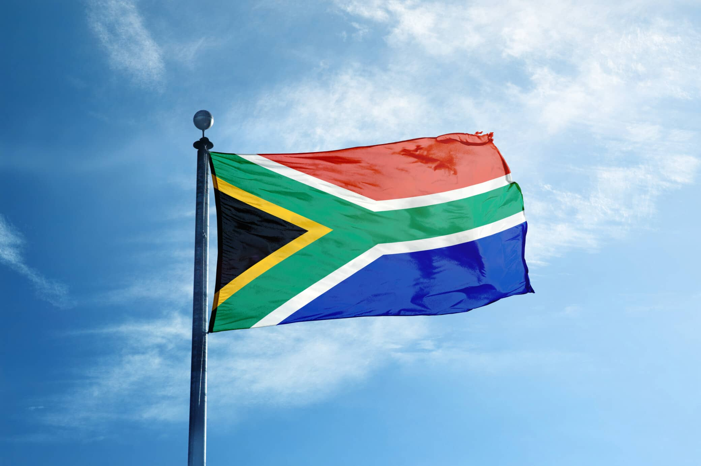

Khanya Nyathikazi
About Me
My name is Khanya Nyathikazi and I was born and raised in South Africa. I am studying to earn a Bacherlor's in Software Development and I am quite knowledgeable about technology. I love learning about music, music theory and attempting to play different instruments. I also love playing video games and watching football in my spare time.
About My Nation

South Africa is one of Africa's most important nations as it generates majority of Africa's electricity and it is one of the world's biggest sources of gold. It is a nation of many different cultures and languages, which is partially represented in its 12 official languages. There are areas of varying climates, such as deserts, wetlands, mountains, subtropical forests and savannahs.